MGIMO AI Challenge · номинация «Вайб-кодинг»
Описание процесса создания
Работающий прототип: https://dekanat.testvless.space · Исходный код: https://github.com/Mikhalitch1/dekanat_konkurs
Концепт для конкурса, не официальный сервис вуза. Все данные в прототипе вымышлены.
Учебная жизнь студента разбросана: расписание на одном сайте, оценки в другой системе, справки через очередь в деканате, объявления в чатах и почте. С телефона найти нужное трудно, а статус любого обращения приходится выяснять звонками и личными визитами. Кабинет собирает это в одном месте и устроен так, чтобы нужное находилось за одно-два касания.
brainstorms/2026-11-19-lk-redesign.md).| Инструмент | Для чего использован |
|---|---|
| Claude Code (приложение для Mac), модель Sonnet 5.5 как основной агент, Opus 5.5 как консультант-ревьюер (инструмент advisor) | Этапы 1–7 (после этапа 0): серверная часть, вся вёрстка интерфейса, миграции и сид, шифрование данных, проверки безопасности, деплой на сервер, GitHub, правовой текст, этот документ. Работает как агент: читает проект, запускает команды, правит файлы, проверяет результат в браузере. |
Codex (этап 0) по AGENTS.md: главный агент и субагенты architect_backend, security_auditor, process_scribe | Импорт и обезличивание расписания, анализ структуры XLSX, независимый аудит фамилий и фильтрации, ведение журналов (см. docs/AI_PROCESS.md). |
Навыки Claude Code: grill-me, frontend-design, design-taste-frontend; проектные dekanat-design, dekanat-security | grill-me — интервью о требованиях с записью в файл; frontend-design и design-taste-frontend — рекомендации по дизайну (часть советов осознанно отклонена: Tailwind, Framer Motion, внешние шрифты — из-за правил проекта и политики безопасности контента); проектные навыки — токены дизайна и правила безопасности для агента. |
| Веб-поиск ИИ-ассистента | Поиск положения о рейтинге МГИМО (не найдено в открытом доступе — формулу баллов сделали условной и честно пометили), чтение регламента конкурса, сведения о GitHub Pages и деплое. |
| Playwright (управляемый браузер) | Автоматическая съёмка скриншотов для этого документа и проверки экранов на 360 px. |
| Собственные SVG | Логотип, афиши, обложки книг и картинки новостей сгенерированы скриптом scripts/generate-art.py. Сторонних изображений и шрифтов нет, поэтому нет и вопросов лицензии. |
| Сервисы и инфраструктура | GitHub (код), Docker и Docker Compose, PostgreSQL, Node.js, Vite, React, Fastify, Let's Encrypt (сертификат), арендованный VPS и домен. Библиотеки перечислены вместе с лицензиями в docs/LICENSES.md. |
Генераторы изображений и видео для дизайна не использовались: весь визуальный стиль нарисован кодом.
Чтобы агент не терял контекст и не «плыл» от сессии к сессии, проект с самого начала содержит файлы, написанные для ИИ:
| Файл | Роль |
|---|---|
AGENTS.md | Жёсткие правила проекта: серверная авторизация, идентификатор студента только из сессии, пароли хэшем, вымышленные данные, 360 px, пустые состояния и ошибки, порядок этапов, контрольные точки, правило «две попытки на проблему, затем откат». |
prompts/00…07_*.md | Постановка задач по этапам: импорт расписания, каркас и безопасность, дизайн-система, ядро, заявки и сотрудник, помощник, тесты, деплой. |
docs/PRD.md, DESIGN.md, SECURITY.md, DATA.md | Продуктовые требования, токены дизайна, модель угроз и правила данных. |
docs/PROGRESS.md | Что сделано, допущения и что дальше после каждого этапа. |
docs/PROMPTS_LOG.md, ERRORS_LOG.md | Ключевые промпты и результат; каждая ошибка с попытками исправления и причиной. |
docs/SECURITY_AUDIT_1.md | Результат независимого read-only аудита. |
brainstorms/… | Интервью с агентом: каждый ответ фиксировался в файле до следующего вопроса. |
| Этап / функция | Промпт (суть, близко к тексту) | Результат |
|---|---|---|
| Этап 0. Импорт расписания | Прочитать AGENTS.md и разобрать XLSX с расписанием. Пустая ячейка — пары нет; C:D — обе недели; вертикальное объединение — длинное занятие; подгруппы и языки учитывать; первая чётность — одна константа; все фамилии заменить псевдонимами; распознавание не ниже 95%. | 1080 записей, 15 групп, 57 псевдонимов, 99,33% распознано; 10 случайных ячеек сверены вручную с XML — 10/10; реальных фамилий в сидах и документах нет. |
| Этап 0. Аудит | Субагент security_auditor — только чтение: фамилии, SQL, выборка студента, секреты. | Найден возврат полного исходного текста ячейки в выборке студента — исправлено явным списком полей и регрессионным тестом. |
| Запуск | «запусти проект локально» | Агент нашёл причину сбоя (карантинные атрибуты macOS на бинарниках, рассинхрон lock-файла, нехватка места в Docker), очистил только неиспользуемое по разрешению и поднял весь стек. |
| Исправление ошибки | «пустые страницы после входа» | Фронтенд ждал поле entries, API отдаёт lessons. Исправлено; после этого типы стали строиться по реальным ответам API, а не по догадке. |
| Интерфейс целиком | «посмотри, как выглядит мой ЛК и доработай приложение по условиям конкурса; нужно сделать всё сейчас» + навыки grill-me, frontend-design, design-taste-frontend | Интервью о приоритетах, затем переписан весь фронтенд: «Сегодня», расписание, успеваемость, заявки с треком, уведомления, профиль, помощник, кабинет сотрудника. |
| Адаптивность | «сделай адаптацию под разрешения и проверь, чтобы в браузере открывалось» | Проверено 10 экранов на ширинах 320–1920 px, добавлен брейкпоинт для планшета. |
| Чистота интерфейса | «убери лишние примечания и другие лишние элементы пояснения» | Убраны подзаголовки и поясняющие абзацы, сохранены только данные и действия. |
| Сотрудник | «дай возможность сотруднику искать студентов, редактировать профили и выставлять успеваемость» | Поиск, правка профиля, баллы и посещаемость, оценка за работу, итог сессии; студент получает уведомление. |
| Данные и события | «добавь студентам адреса, личные почты, СНИЛС, паспорт РФ (сгенерируй); раздел мероприятий с баллами за внеучебную деятельность; портфолио; библиотеку; новости с картинками» | Миграция, сид, шифрование паспорта и СНИЛС, события, баллы, портфолио, библиотека, картинки. Агент не нашёл официальную формулу МГИМО и честно пометил схему баллов как условную. |
| Удобство сотрудника | «создание не в конце, а плюсом в шапке; история новостей, чтобы не уходило в пустоту» | Список с кнопкой «Создать» в шапке; история новостей; найден и исправлен баг устаревшего списка. |
| Деплой и публикация | «выложи на GitHub, чтобы это было сайт-приложение» → «установи по варианту А» | Развёртывание на VPS рядом с существующими сервисами без изменения их портов, сертификат, GitHub, правовой текст, проверка по регламенту. |
Мы считали ошибки ИИ нормой процесса и закрепили её правилами: две попытки на проблему, затем откат и запись в журнал; независимый аудит отдельным агентом без права правки; проверка в браузере вместо «должно работать».
| Что пошло не так | Как нашли и что сделали |
|---|---|
| Этап 1 не принят: сборка Docker падала из-за кириллицы в пути проекта (ошибка gRPC) | После двух одинаковых сбоев сработало правило отката: код возвращён к контрольной точке, причина записана в ERRORS_LOG.md, кандидат сохранён в архиве. Позже стек собрали заново. |
| После входа пустая страница | Агент писал фронтенд по догадке о формате ответа. Теперь типы берутся из реальных JSON ответов. |
| Аудитор нашёл гонку запоздалого ответа между аккаунтами и утечку полного текста ячейки | Добавлены отмена запросов с «поколением» и явный список полей API; регрессионные тесты. |
| Тесты API устарели после смены маршрутов | Пять тестов написаны под старый API. Честно оставлены в списке известных долгов, а не «подогнаны». |
| Форма входа на широком экране зажата в узкую колонку (заметил автор по своему скриншоту) | Причина — сетка с колонкой навигации, когда навигации нет. Исправлено отдельным классом. |
| Список новостей не обновлялся после публикации | Найдено при пошаговой проверке в браузере: компонент не пересоздавался. Разделён на форму и список. |
На сервере старая версия nginx не знала директиву http2 on | Автоматическая проверка конфигурации откатила изменение, соседние сервисы не пострадали; синтаксис исправлен. |
| Лицензия не учитывала передачу прав организатору | После чтения регламента (п. 6.2–6.4) текст переписан: права переходят организатору при подаче, личные права авторов сохранены. |
Все скриншоты сняты на боевом сайте на экране 360 px (кроме одного десктопного). Данные вымышленные.
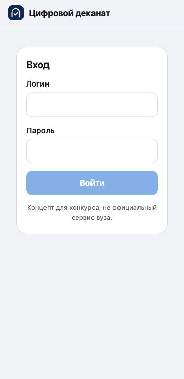
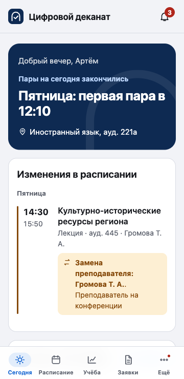
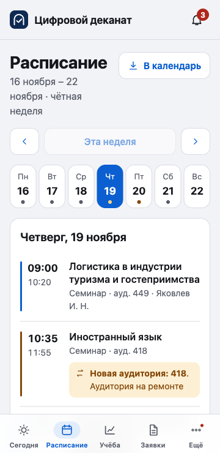
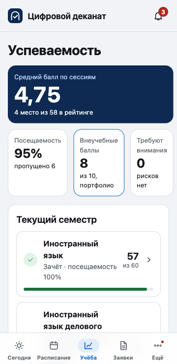
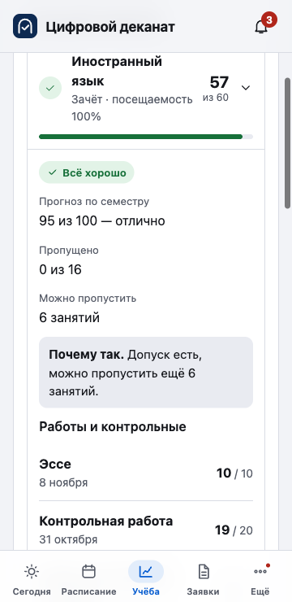
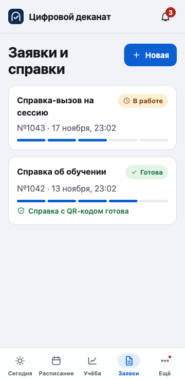
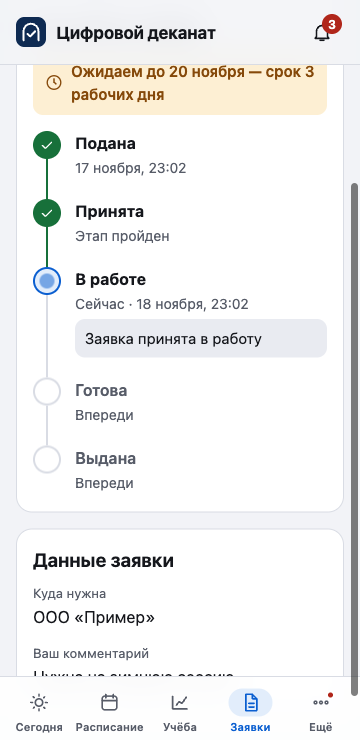
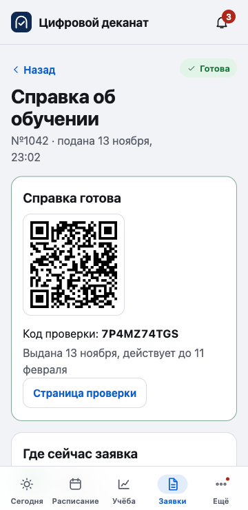
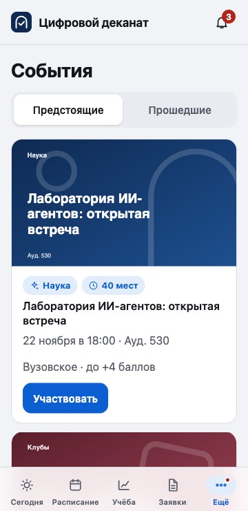
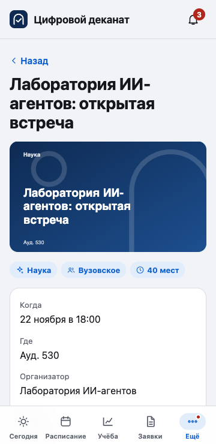
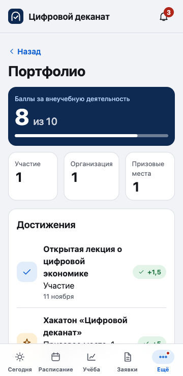
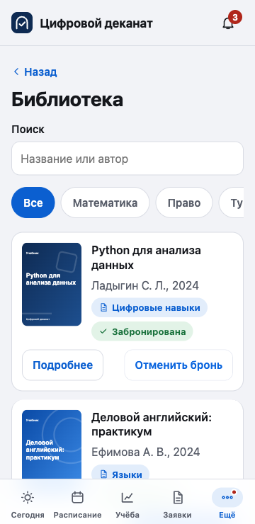
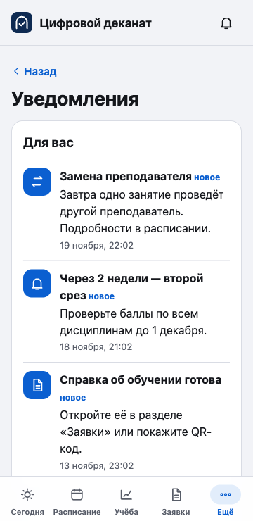
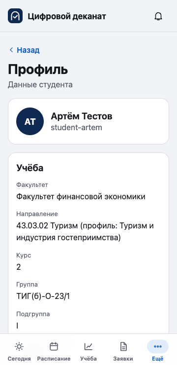
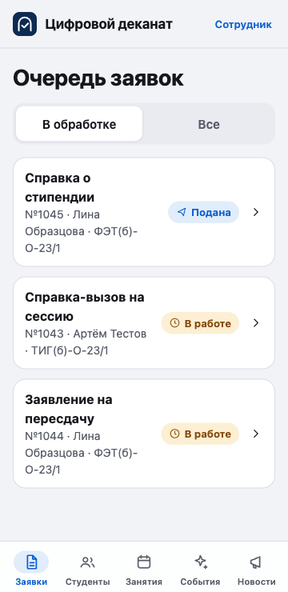
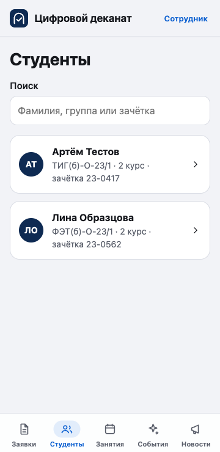
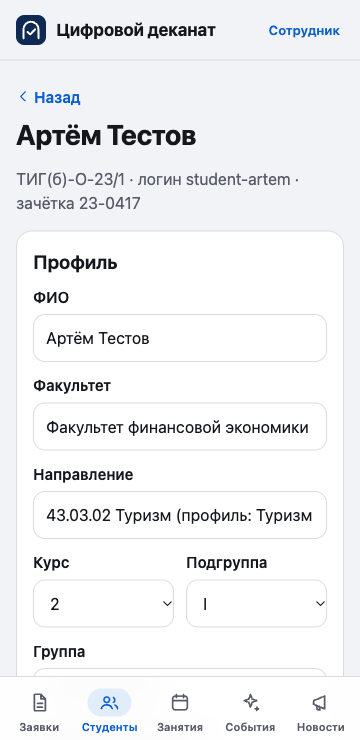
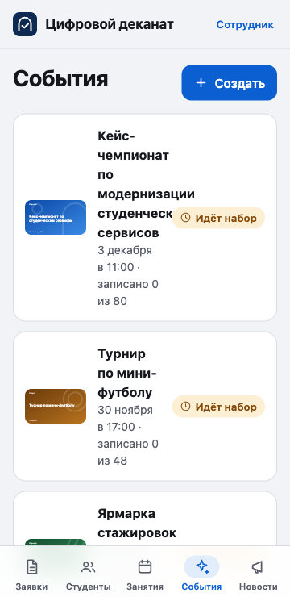
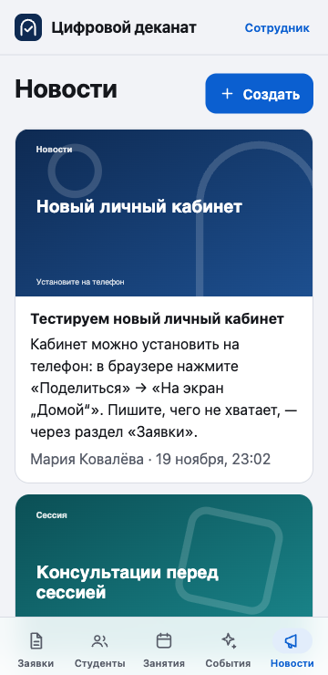
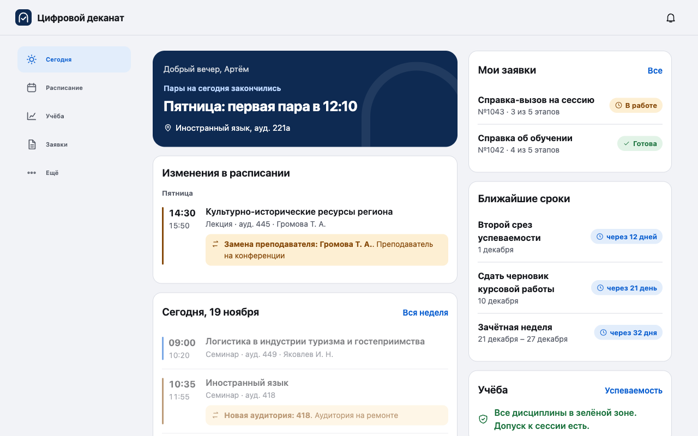
Эволюция: сначала была минимальная оболочка (вход, профиль, расписание); затем переписан весь интерфейс; позже добавлены события, портфолио, библиотека и инструменты сотрудника. Скриншоты промежуточных версий не сохранялись, ключевые ошибки описаны в разделе 5.
.env на сервере, которого нет в репозитории. Помощник работает и без внешней модели; если ключ ИИ подключён, он используется только на сервере.AGENTS.md и этапов, подтверждение допущений на этапе 0.Весь код, тексты и дизайн написаны ИИ-ассистентами по задачам авторов; авторы ставили задачи, принимали и проверяли результат.
Нужен только Docker (Docker Desktop на Mac и Windows или Docker Engine с Compose v2 на Linux).
git clone https://github.com/Mikhalitch1/dekanat_konkurs.git cd dekanat_konkurs ./start.sh
Скрипт сам создаёт секреты и локальный сертификат, собирает контейнеры (первый запуск 3–6 минут) и печатает адрес https://localhost:8443 и пароли тестовых аккаунтов. Браузер предупредит о самоподписанном сертификате — нажмите «Дополнительно» → «Продолжить». На Windows запускайте через WSL или Git Bash. Остановить: docker compose down. Подробности — в README.md.
© 2026 Команда проекта «Цифровой деканат будущего». Все права защищены (см. LICENSE). В соответствии с Регламентом конкурса (п. 6.2–6.4) исключительное право на работу переходит организатору конкурса при её отправке; личные неимущественные права авторов сохраняются.